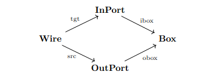

Lecture 6: Path categories and functors as data structures
Graphs
A graph \(G\) consists of the following.
- A finite set \(G(V)\) of vertices
- A finite set \(G(E)\) of edges
- A function \(G(\mathrm{src}) \colon G(E) \to G(V)\) called the source map
- A function \(G(\mathrm{tgt}) \colon G(E) \to G(V)\) called the target map
You can think about this like a “database” with two tables, one table for edges and one table for vertices. The vertex table has only a primary key column, and the edge table has two foreign key columns in addition to a primary key column.
Notice that we allow multiple edges between a single pair of vertices, and also edges from a vertex to itself.
In Julia, we can represent this in the following way.
struct Graph
vertices::FinSet{Int}
edges::FinSet{Int}
src::FinFunction{Int,Int}
tgt::FinFunction{Int,Int}
endNote that graphs seem somewhat similar to categories; vertices are analogous to objects and edges are analogous to morphisms. The important difference is that categories have composition and identities, and graphs don’t. There is, however, a way of building a category out of a graph, and that is the subject of the next section.
Path categories and functors out of them
If \(G\) is a graph, then a path in \(G\) is a list \(e_{1},\ldots,e_{n}\) of edges, such that \(G(\mathrm{tgt})(e_{i}) = G(\mathrm{src})(e_{i+1})\) for \(i=1,\ldots,n-1\). We say that the path goes from \(G(\mathrm{src})(e_{1})\) to \(G(\mathrm{tgt})(e_{n})\).
We can make a path from Arad to Bucharest by going
Arad -> Sibiu -> Fagaras -> Bucharest
If \(G\) is a graph, then given a path \(e_{1},\ldots,e_{n}\) from a vertex \(a\) to a vertex \(b\), and a path \(e_{1}^{\prime},\ldots,e_{m}^{\prime}\) from \(b\) to another vertex \(c\), we can construct a path \(e_{1},\ldots,e_{n},e_{1}^{\prime},\ldots,e_{m}^{\prime}\) from \(a\) to \(b\).
When you hear the word “compose” your eyes should light up and think “Oh, is this a category?” And in this case, it is!
For any graph \(G\), there is a category \(\mathrm{Path}(G)\), where the objects are vertices in \(G\) and a morphism from a vertex \(a\) to a vertex \(b\) is a path from \(a\) to \(b\) in \(G\). Composition is as it was in the proposition above, i.e. list concatenation, and the identity on a vertex is simply the empty list.
Whenever you see something that constructs something from another thing, you should think “is this a functor”? And it turns out that \(\mathrm{Path}\) is in fact a functor from the category of graphs to the category of categories. However, in order to write this down properly, we have to define the category of graphs, and we aren’t quite ready to do that yet (we will do it by the end of this lecture, though).
The category \(\mathrm{Path}(G)\) has a special property. Namely, in order to define a functor \(F\) from \(\mathrm{Path}(G)\) to a category \(\mathsf{C}\), all you have to do is pick an object \(F(v)\) \(\mathsf{C}\) for every vertex \(v \in G(V)\), and then pick a morphism \(F(e) \colon F(G(\mathrm{src})(e)) \to F(G(\mathrm{tgt})(e))\) for every edge \(e \in G(E)\).
Then where do you send a path \(e_{1},\ldots,e_{n}\)? Well, you just send it to the composite morphism \(F(e_{n}) \circ \cdots \circ F(e_{1})\)! It turns out that any choice of the \(F(e)\) works for this; you get preservation of composition “for free”!
So it’s particularly easy to define a functor coming out of \(\mathrm{Path}(G)\), and it’s also particularly easy to store such a functor: we just store an object for every vertex of \(G\) and a morphism for every edge.
We call a functor from \(\mathrm{Path}(G)\) to \(\mathsf{Set}\) an acset, pronounced to rhyme with “hatchet”. Other terminology you might see (and the etymology for acset) is C-set or copresheaf. However, this can be confusing because sometimes the “C” in C-set refers to \(\mathrm{Path}(G)\), but sometimes we just use C-set as a word. I like to use “acset on schema C” instead of C-set, because then I can just say “acset” without having to define C first. And copresheaf is just unnecessarily fancy. We say “schema” here, because you can think of \(\mathsf{C} = \mathrm{Path}(G)\) as a “database schema”; we’ll see more about this later.
Strictly speaking, there’s more to an acset than what we just presented; the “a” in acset stands for “attributed”. But we will cover this later; functors from \(\mathrm{Path}(G)\) to \(\mathsf{Set}\) are a special case of acsets.
We will now look at some examples!
Graphs
First of all, we can go meta and define graphs themselves this way!
Consider the following graph \(G\).
We let \(\mathsf{Gr} = \mathrm{Path}(G)\). Then an acset on \(\mathsf{Gr}\) is a graph. Using graphs to define graphs is pretty trippy, but fortunately we can “close the loop” because our original definition of graph didn’t rely on any of this notation. Notice that we have been using the notation for a functor out of \(\mathsf{Gr}\) all along however!
Petri nets
Consider the following graph \(G\).
We let \(\mathsf{Petri} = \mathrm{Path}(G)\). Then an acset on \(\mathsf{Petri}\) is a petri net.
Examples of Petri nets:
Wiring diagrams
Consider the following graph \(G\).

We let \(\mathsf{DPG} = \mathrm{Path}(G)\). Then an acset on \(\mathsf{DPG}\) is a directed port graph.
Wiring diagrams are slightly more complicated, because they also allow incoming and outgoing wires. Wiring diagrams and directed port graphs can be used to model processes.
ACSets in Julia
(this part will be livecoded)
Sneak peak: natural transformations
We said before that there is a category of graphs. In this part, we will give a definition of a graph homomorphism that will make this precise. It turns out that this comes from a general definition of natural transformation, which can be defined at the level of functors and categories! However, we will only give a hint at what this is, and leave a full exploration of natural transformations to the next lecture.
A graph homomorphism \(\alpha\) from a graph \(G\) to a graph \(H\) consists of two maps
- \(\alpha_{V} \colon G(V) \to H(V)\)
- \(\alpha_{E} \colon G(E) \to H(E)\)
such that \(\alpha_{V} \circ G(\mathrm{src}) = H(\mathrm{src}) \circ \alpha_{E}\) and \(\alpha_{V} \circ G(\mathrm{tgt}) = H(\mathrm{tgt}) \circ \alpha_{E}\).
This means that the graph homomorphism has to “preserve sources and targets”. Just like a functor has to send a morphism from \(A\) to \(B\) to a morphism from \(F(A)\) to \(F(B)\), a graph homomorphism has to send an edge from \(a\) to \(b\) to an edge from \(\alpha_V(a)\) to \(\alpha_{V}(b)\).
These conditions can be expressed equivalently as commutative diagrams. Basically, an commutative diagram is a way of writing an equation between composites of morphisms in a category. The equation is that when you compose the morphisms along any path in the diagram, you get the same result.
In a future lecture, we will see that these are specific instances of the so-called “naturality squares” for natural transformations.
A three-coloring of a graph \(G\) is a graph homomorphism from \(G\) into the graph above. It assigns each vertex of the graph to a color. Notice in a three-coloring, any two vertices connected by an edge must be assigned different colors, because there are no self-edges in the above graph.